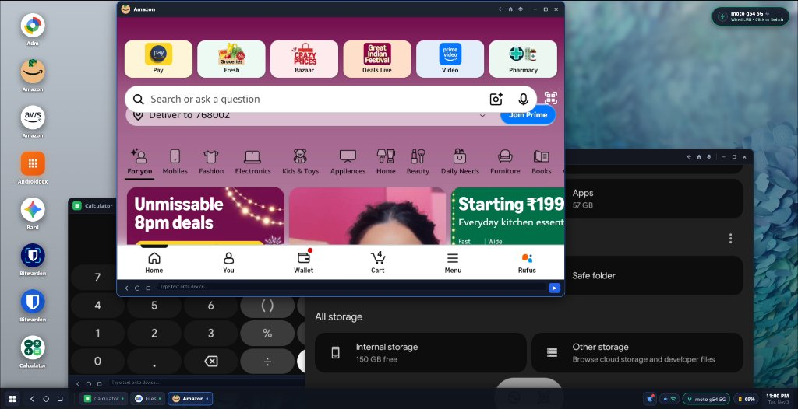
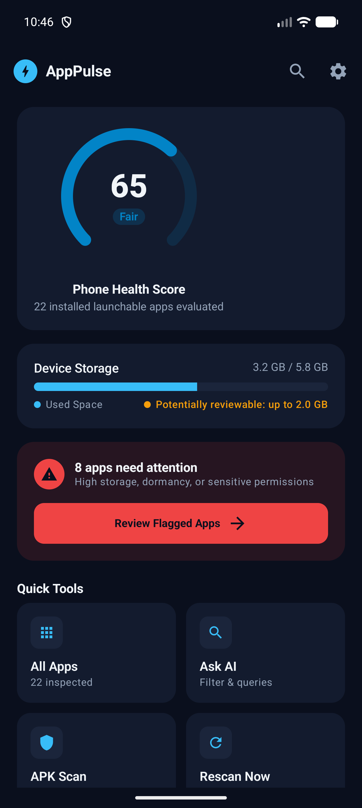

We bridge everyday mobile devices into high-performance desktop workstations, craft zero-trust developer sandboxes with instant on-device AI diagnostics, and engineer deterministic Android systems where 100% of telemetry remains strictly on-device.
We reject gimmicky "one-click cleaner" scams, leaky cloud execution wrappers, and vendor-locked walled gardens. Every Bit Manipulators project is designed around deterministic science and zero-compromise privacy.
Transforms everyday Android smartphones and tablets into full multi-window Linux desktop workstations under Wayland & X11. Features dynamic 8-way window resizing, Z-index layer ordering, and direct GPU in-process 60 FPS FFmpeg texture streaming over headless ADB pipes.
Empowers mobile engineers to capture and analyze code from screens or paper using in-memory camera OCR without writing raw pixels to disk. Executes untrusted user scripts in ephemeral Docker micro-sandboxes hardened with --net=none, read-only rootfs, and dropped Linux kernel capabilities.
Engineers system telemetry and device vitality managers where 100% of data remains on-device. Transparent mathematical scoring formulas calculate app impact without deceptive cleaner scare tactics, background task killing, or covert ad broker telemetry harvesting.
All codebases are authored from first principles using clean-room specifications, transparent licensing (GPL-3.0 and MIT), open protocols, and modular designs. We build tools that developers can inspect, audit, fork, and compile locally without proprietary black boxes.
Actively maintained open-source repositories pushing the boundaries of mobile operating systems, Linux desktops, and sandboxed AI.

Transforms Android smartphones into a multi-window desktop workstation under Linux. Features 8-way resizable floating windows, dynamic Z-ordering, interactive DeX taskbar, and in-process 60 FPS FFmpeg GPU textures via ADB pipes.
Intelligent on-the-go code debugger and zero-trust container sandbox. Photograph code with camera OCR, run multi-language static diagnostics (Python, JS, C++, Java), and safely test code in severed Docker sandboxes.

Privacy-first, on-device Android 15 health & resource manager. Delivers reproducible mathematical scores for RAM, storage, and sensitive app permissions (Camera, Mic, Location) with strictly zero network egress.
Explore our companion portal, security standards, and contribution frameworks.
Directly query our systems, trigger simulated diagnostic scans, and inspect low-level architectures from the browser.
Why we build clean-room systems: a direct comparison between the status quo and our deterministic engineering standard.
Deceptive Cleaners & Leaky Clouds
Deterministic, Private & First-Principles
--net=none, read-only rootfs, and dropped Linux capabilities.
Our systems bridge low-level POSIX and Android kernel protocols with cutting-edge UI compositors and zero-trust sandboxes.
Built by passionate systems engineers, reverse engineering enthusiasts, and kernel tinkerers based in India.
Specializes in Linux desktop compositing, Wayland/X11 protocols, reverse engineering, and low-latency display streaming pipelines.
Architecting zero-trust mobile sandboxes, on-device AI copilot diagnostics, deterministic metrics, and organizational technical direction.
We welcome systems programmers, reverse engineers, UI designers, and technical writers. Jump into our good first issues or open an architectural RFC.
Our projects strictly abide by open-source ethics, respectful communication, and responsible security disclosures.
We foster an open, welcoming, and harassment-free community. All participants agree to abide by our standard Contributor Covenant.
Read CODE_OF_CONDUCT.md →Found a vulnerability? We take zero-trust security seriously and commit to rapid remediation via responsible private disclosure.
Read SECURITY.md Policy →All code is released under transparent, battle-tested open licenses (GPLv3 for system compositors, MIT for sandboxes and mobile tools).
View Licensing Terms →